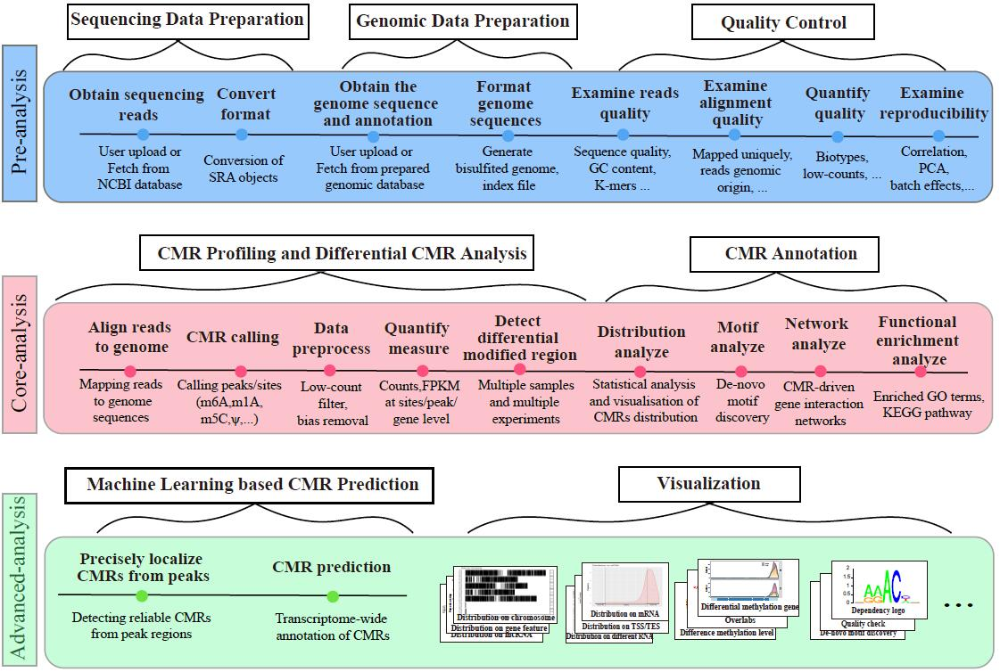

DeepEA: a Galaxy-based framework for exploration and large-scale analysis of epitranscriptome sequencing data¶
DeepEA is an upgrated version of PEA, which is a special designed R toolkit for plant epitranscriptome analysis. In the current version of DeepEA, a variety of modules and functions including data preparation, quality control, CMR (chemical modifications of RNA) profiling and analysis, CMR annotation, CMR prediction and related visualization are implemented to enable uses perform large-scale, reproducible epitranscriptome analysis. In addition, by taking advantages of multiple instance learning (MIL) algorithms, DeepEA can precisely localize CMRs in peak regions. This can reduce the false positive CMRs generated by MeRIP-Seq/m6A-Seq/m5C-RIP-Seq, as which can localize CMRs to transcript regions of 100-200 nucleotide long but fail to accurately identify CMRs at single-nucleotide solution. The DeepEA project is hosted on Github
There are 2 ways for using deePEA:
- Galaxy server usage – our public deePEA Galaxy server let’s you use the DeepEA within the familiar Galaxy framework without the need to master the command line.
- DeepEA Docker image – The packaged deePEA docker image enable users build a DeepEA server in their local device without any dependencies.
Contents:¶
While developing DeepEA, we continuously strive to create software that fulfills the following criteria:
- Support more CMR recognition
- More accurate method of CMR prediction
- Richer and more effective visualization
- make use of multiple processors
- More analysis methods focus on the regulation of a single gene by CMR
- modular approach - compatibility, flexibility, scalability (i.e. we can add more and more modules and make use of established methods)
Tip
For support, questions, or feature requests contact: q2516581@126.com chuangma@gmail.com